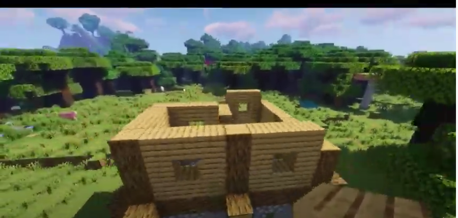

First, make the outline in the ground just like this. The white blocks are each three blocks long.
At the spot that in the bottom right corner of the L, put down a stone brick block on the gray wool. Then , next it on the left, put a cobblestone block. Leave a space for the door, the cobblestone, then stone brick.
Then, continue with 1 cobblestone, 1 cobblestone stairs, 1 cobblestone, and 1 stone brick. Then, around the bend, repeat the process. Repeat again, but this time, where there is no gray wool, don't put a stone brick down. The, keep repeating the pattern normally until you come back to the door section. It should look like this.
Next, build up every block 2 blocks up, the same block as the first block, so, build up on the cobble with cobble, and the on stone bricks with stone bricks. But, don't build up where the door will be , or where the stairs are.
Next, put an upside down stair by the door on the third block up, like this, and put a cobblestone block by the stairs, but so that there is a block of space between them, for windows.
Then, on the outside, go to the stone brick pillars and put stone brick stairs on it, one on the bottom block and one upside-down stair on the top. If the bricks are on a corner, then put the stairs for both sides that are facing out, but don't connect them. For a pillar that isn't on a corner, then just put the stairs on the side that is facing the outside, like this. Repeat for every stone brick pillar.
Now, replace some cobblestone with stone wherever you like.
Next, on the bottom left side, take oak logs and place them so that the direction is from down to up from one stair to the other. Then, keep doing that, with the other stairs on the bottom side.
Then, take the oak logs, and make them go horizontally, still from one stair to the other.
Now for the second story. Now, retrace the outline again, but this time with a pattern of oak logs where the stone bricks would be, and then 3 oak planks connecting them. This is the same pattern all the way around. Remember to leave that oak block out where the right angle of planks would hide it from showing on the outside.
Now, build up the wall. The oak logs go 2 blocks up, and so do the oak planks, but the middle one doesn't, for the front wall. Then, on the corner, only build up the oak log one block, repeating what is under it, like so.
For the next two sections, build the same patterns the one across from it ( remember to leave out the oak log in the corner! ) and then for the last two sections,do the same as the front wall: up two, leave out the middle.
Next, put oak planks on the top block of the middle blocks that have been left out, as in the picture. 
Now for the roof. Starting at the front wall, go to the oak log that is only 2 blocks tall, and on the 2nd block, go to the side and place a spruce stair and then extend it out two blocks. Then, on the stair furthest from the front wall, do a pattern of upside down stair, regular stair on top, so that it goes up two blocks, place a sideways upside down stair, then come down and connect it to the wall. Now, put a spruce slab on the sideways upside down stair. then take oak stairs, and place them behind the spruce stairs, but only the regular facing stairs and the slabs. Then go to the bottom and place in all the upside down stairs, but the sideways one is facing toward the inside of the house. Repeat this on the opposite side of the house, but the oak stairs go 2 blocks back and the sideways upside down stairs.
Next, place a oak plank to cover up the little space made by the oak upside down stair.
Now, take spruce stairs and use it for the outline of the roof, like so.
Next, place oak stairs/slabs to fill in the roof.
Now, use the same design for the front of the roof on the left side of the box that isn't covered with the roof. Then, use spruce stairs to outline the bottom, and then use oak stairs/slabs to connect the stairs to the rest of the roof.
Finally, place lanterns for lights and white stained glass panes for windows with acacia buttons on either side of them. Use a ladder for going from one floor to the other and use spruce slabs on the top half of the block for flooring.